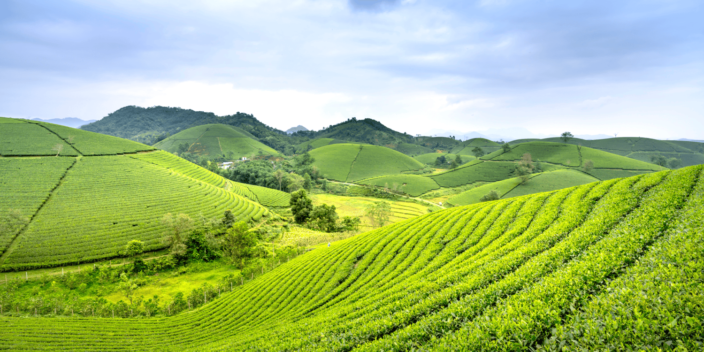

Sri Lanka, often referred to as the "Pearl of the Indian Ocean," is
world-renowned for its lush tea plantations and rich tea heritage. A
visit to this tropical paradise is incomplete without experiencing
the beauty and charm of its rolling tea estates.
Tea plantation tours have become a major attraction among tourists,
offering an immersive journey into the history, culture, and
craftsmanship behind Sri Lanka’s world-famous Ceylon tea. The
vibrant green landscapes, cool mountain air, and scenic train rides
through the highlands make these tours a memorable part of any
travel itinerary.
Tea plantation tours provide visitors with a unique
behind-the-scenes look at the journey from tea leaf to teacup. Most
experiences begin with a guided walk through the tea fields, where
tourists observe skilled tea pluckers hand-picking the freshest
leaves.
Next, guests visit a working tea factory, witnessing
each step of the production process - withering, rolling,
fermenting, drying, and grading. The highlight is often the tea
tasting session, where visitors can sample a range of Ceylon teas,
from bold black varieties to delicate green and white blends. Expert
guides help identify unique flavors and aromas, creating a deeper
appreciation for Sri Lanka’s iconic beverage.
Nuwara Eliya is one of the most famous tea-producing regions in Sri Lanka. Situated at a high elevation, its cool climate and misty landscape make it perfect for growing high-quality Ceylon tea. Visitors can tour iconic estates like Pedro Tea Estate and enjoy picturesque views, colonial charm, and scenic train rides.
Ella offers a laid-back atmosphere with breathtaking views of green-covered hills and valleys. The area is dotted with tea plantations like Halpewatte Tea Factory, where tourists can learn about the tea-making process and sample freshly brewed teas while overlooking spectacular landscapes.

Though known for its cultural heritage, Kandy also plays a role in Sri Lanka’s tea industry. Located at the foothills of the central highlands, the city offers easy access to nearby estates like Giragama and Hanthana Tea Factories, which blend tea experiences with rich historical insight.
For those seeking a quieter, more authentic tea experience, Haputale is ideal. This small town is surrounded by lush plantations like the Dambatenne Tea Estate, founded by Sir Thomas Lipton. The region’s viewpoints and hiking trails add a sense of adventure to any plantation tour.